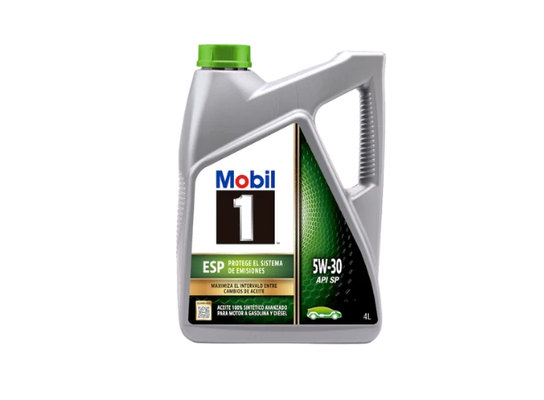
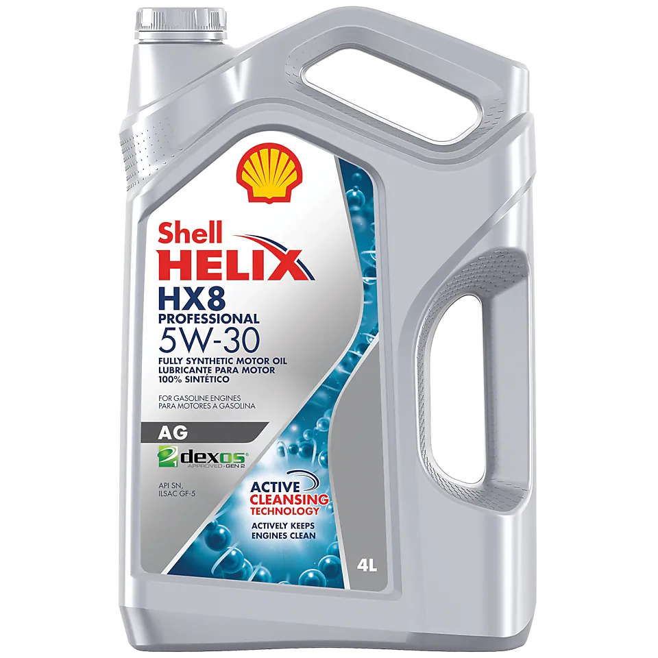
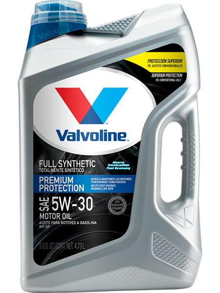

Trabajos realizados

¿Qué aceites usamos?



En Automotrix, nos dedicamos a seleccionar meticulosamente los aceites automotrices de la más alta calidad, asegurando que el vehículo de nuestros clientes funcione de manera óptima y sin fallas. Nuestro compromiso con la excelencia nos impulsa a buscar constantemente los productos más avanzados y confiables del mercado, garantizando así un rendimiento sobresaliente y una prolongada vida útil para los motores de los vehículos que atendemos.
| Nombres | Apellidos | |
|---|---|---|
| Daniel Isacc | Maturana Gutierrez | daniel1996@gmail.com |
| Tomas Andres | Aranguiz Hernandez | tomas1987@gmail.com |
| Felipe Daniel | Caceres Gonzalez | felipe2000@gmail.com |
| Jose Raul | Muñoz Aranguiz | jose1999@gmail.com |
| Kevin | Fuentes Solana | kevin6785@gmail.com |
| Fernando Jose | Bermejo Caepi | fernando2424@gmail.com |
| Angel Luis | Cubero Castillo | angel8981@gmail.com |